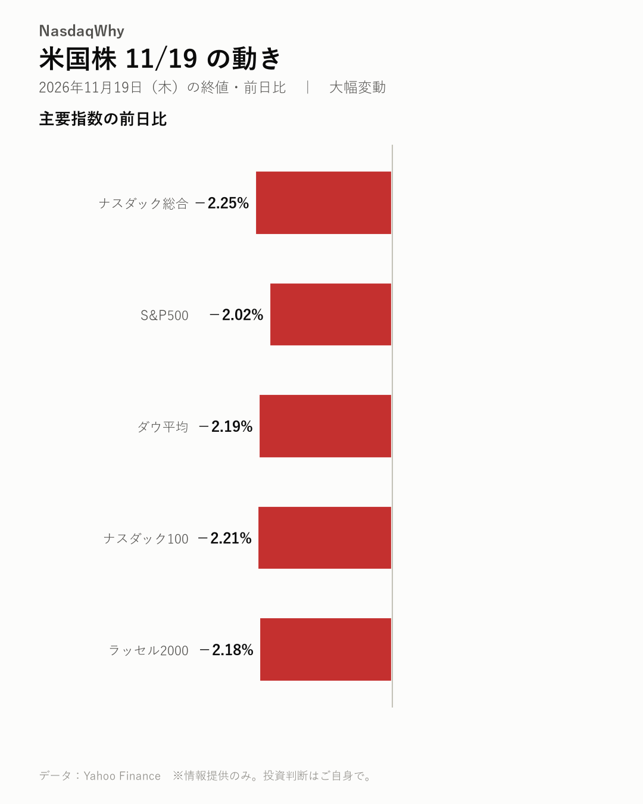
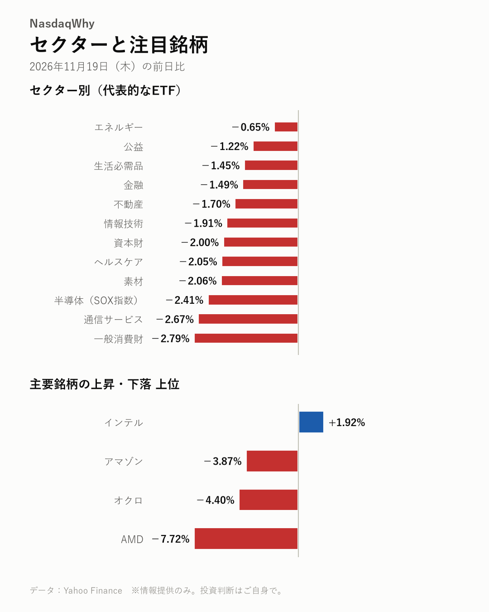

11/19の米国株：AMDの中国疑惑、なぜ市場全体の下げにつながった？
2026年11月19日（木）の米国市場（日本時間の翌朝更新） ｜ 大幅変動
今日の疑問
AMDの中国疑惑、なぜ市場全体の下げにつながった？
空売り投資家がAMDと中国企業との関わりを指摘し、株価は-7.72%と急落した。中国関連の懸念はAI株に広がり、アンソロピック上場を手がかりにした半導体株の上げも失速した。ダウ平均や生活必需品まで下げた理由は明確な材料は見当たらず、まだ分からない。

主要指数
| 名前 | 終値 | 前日比 | 騰落率 |
|---|---|---|---|
| ナスダック総合 | 23,879.20 | -550.68 | -2.25% |
| S&P500 | 7,175.83 | -147.80 | -2.02% |
| ダウ平均 | 49,097.06 | -1,101.11 | -2.19% |
| ナスダック100 | 26,517.05 | -599.21 | -2.21% |
| ラッセル2000 | 2,655.11 | -59.20 | -2.18% |
なぜ動いた？
- 空売り投資家のハンターブルックが、AMDの基本ソフトが禁輸対象の中国企業で見つかったと指摘。株価が急落した。会社側は米国法を守っていると反論した（出典：Yahoo Finance、CNBC、Yahoo Finance、Reuters、Financial Times）
- アンソロピック上場を手がかりにした半導体株の上げが失速した。中国関連の懸念がAI株全体の重荷になった（出典：Seeking Alpha、TradingKey、Crypto Briefing）
- 報告書は取引先との循環的な取引にも触れ、AMDはエヌビディアの代わりにならないと論じた。成長期待に疑問符がついた（出典：Bloomberg.com、Barron's）
- インテルは逆行高。最新の受託製造プロセスで初の顧客を獲得した。ただ、上昇との直接の関係は見出しからは分からない（出典：Yahoo Finance、digitimes）
深掘り：大きく動いた背景
米国株は全面安だった。ナスダック総合は-2.25%、S&P500は-2.02%、ダウ平均は-2.19%。震源はAMDで、株価は-7.72%と急落した。 空売り投資家のハンターブルックが報告書を公表した。AMDのファームウェア（機器を動かす基本ソフト）が、米国の禁輸リストに載る中国のサーバー企業で見つかったと主張している。ロイターは、中国との関わりが米当局の調査を招く可能性があると報じた。報告書は取引先と資金が循環する取引にも触れ、AMDはエヌビディアの代わりにならないとも論じた。 売りは半導体全体に広がった。SOX指数は-2.41%、エヌビディアは-3.30%。アンソロピックの上場を手がかりにした半導体株の上げは、取引の途中で失速した。中国関連の懸念がAI株の重荷になったとの見方が出ている。 別の見方もある。AMDは米国の法律を守っていると反論した。同社株は割安だとする分析もあり、キャシー・ウッド氏は中核銘柄として買い増す姿勢を示している。インテルは+1.92%と逆行高だった。 まだ分からない点も多い。ダウ平均や生活必需品まで下げた理由は、明確な材料は見当たらない。次に確かめたいのは、米当局が動くかどうかと、FOMCを前にした金利の見方だ。
セクター
全セクターが下落した。一般消費財は-2.79%、通信サービスは-2.67%、半導体（SOX指数）は-2.41%。エネルギーは-0.65%で下げが小さい。ハイテク以外の下げには明確な材料は見当たらない。
- 騰落率の高い順：エネルギー -0.65%、公益 -1.22%、生活必需品 -1.45%
- 騰落率の低い順：一般消費財 -2.79%、通信サービス -2.67%、半導体（SOX指数） -2.41%

注目銘柄
AMDは-7.72%と急落。中国企業との関わりを指摘した空売り報告が売りを誘った。アマゾンは-3.87%、アルファベットは-3.46%と大型株も軒並み安い。インテルは+1.92%と逆行高。
- 上昇：インテル（INTC）+1.92%
- 下落：AMD（AMD）-7.72%、オクロ（OKLO）-4.40%、アマゾン（AMZN）-3.87%
半導体トピック
- TSMCとサムスン電子が、中国の顧客向けの一部出荷を止めた（Financial Times）
- 中国CXMTの売上が急増し、DRAMの品薄は続く見通し（Businesskorea）
- インテルが最新の受託製造プロセスで初めての顧客を得た（digitimes）
関連市場
| 名前 | 終値 | 前日比 | 騰落率 |
|---|---|---|---|
| 米10年債利回り | 5.052% | -0.014pt | ― |
| ドル円 | 159.70 | +0.20 | +0.12% |
| 金先物 | 3,654.20 | -87.70 | -2.34% |
| 原油先物(WTI) | 83.17 | -0.09 | -0.11% |
| ビットコイン | 61,576.88 | -1,410.39 | -2.24% |
米10年債利回りは-0.014ポイントと小幅に低下した。ドル円は+0.12%で円安方向。金先物は-2.34%、ビットコインは-2.24%と下げ、原油は-0.11%と小動き。明確な材料は見当たらない。
今後の注目
- AMDの中国企業との関わりをめぐる、米当局の調査の有無（Reuters）
- 12/9（水） FOMC（米連邦公開市場委員会）の金融政策発表（公式発表）
- TSMCとサムスン電子による、中国の顧客向け出荷停止の広がり（Financial Times）
出典（見出し）
- Yahoo Finance：AMD Is Down 8% After Short Seller Hunterbrook Ties AMD’s Firmware to Blacklisted Chinese Server Maker; Resilient Intel Remains Up 5%（記事）
- CNBC：AMD dives on short-seller report of alleged China exposure（記事）
- Yahoo Finance：AMD stock drops after Hunterbrook Media raises export control concerns（記事）
- Reuters：AMD shares slide as report says China links could invite US scrutiny（記事）
- Financial Times：AMD shares fall after short seller report on China links（記事）
- Seeking Alpha：Anthropic-fueled rally in chip stocks reverses course (AMD:NASDAQ)（記事）
- TradingKey：Nasdaq Drops 2.2%, Anthropic Slips to Close at $97 After Higher Open; Tech Stocks Slump as AMD Falls Over 7%（記事）
- Crypto Briefing：AMD sheds nearly $100 billion in market value as China chip concerns hit AI stocks（記事）
- Bloomberg.com：AMD Slides After Hunterbrook Shorts Stock, Cites Circular Deals（記事）
- Barron's：AMD Stock Drops After Short Report Says It Isn’t an Nvidia Replacement（記事）
- digitimes：Intel lands first customer for 18A-P foundry process（記事）
- Financial Times：TSMC and Samsung suspend some chip shipments to Chinese customers（記事）
- Businesskorea：CXMT Revenue Jumps 613% YoY as DRAM Shortage Set to Persist Through Q4（記事）
データ：Yahoo Finance
📝 note でも読めます（図つき・まとめ）：note.com/nasdaqwhy